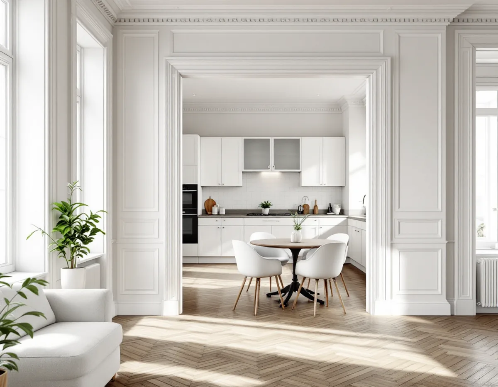
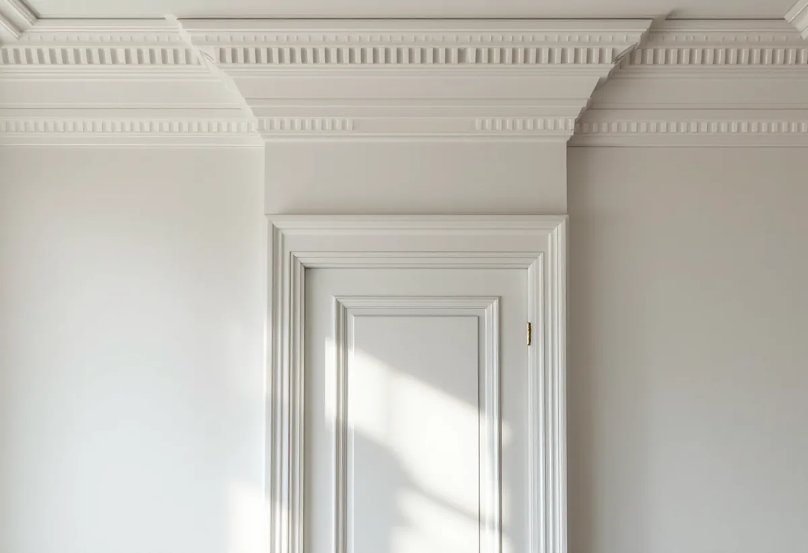
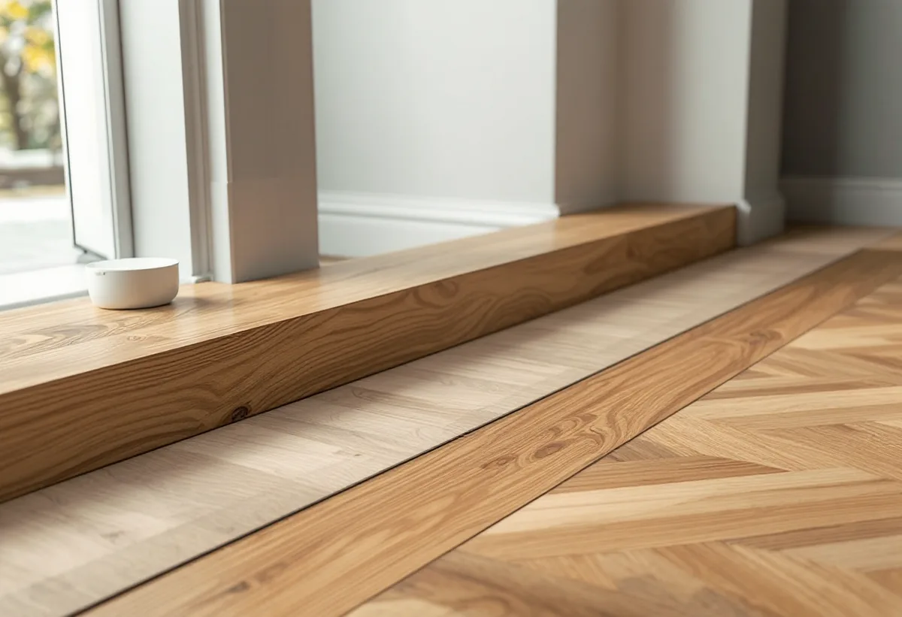

Besök
Gratis besök där vi tittar på väggen, golvet och taket.
Många som köper en äldre lägenhet i Vasastan vill öppna upp – mellan köket och vardagsrummet eller mellan två små rum. Det är snickarens jobb, men först måste någon ta reda på om väggen bär. Vi hjälper dig från ritning och styrelsens tillstånd till nya foder, dörröppningar och lister som passar lägenheten.

Stadens statistik för 2024 visar 12 579 bostäder i Västra Matteus och 8 889 i Gustav Vasa, två av Vasastans statistikområden. Tvåor är vanligast i Västra Matteus, och de flesta bostäderna är bostadsrätter – 8 990 i Västra Matteus och 5 707 i Gustav Vasa.
Husen är från olika tider. Stora delar är stenstad från perioden 1870–1930, och i Röda Bergen och kvarteren Motorn och Vingen byggdes på 1910- och 1920-talen nya kvarter med friare planformer och gårdar. Väggarna mellan rummen är byggda på olika sätt i olika hus, och det är just det som avgör vad som går att ta bort.

Staden skriver att du behöver göra en anmälan och invänta startbesked om ändringen påverkar byggnadens bärande konstruktion. Ritningar kan ge en bild av hur huset är byggt, men staden påpekar att de kan vara ofullständiga och att det inte är säkert att byggarna följde dem.
Staden kan inte heller bedöma åt dig om en vägg bär. Därför tar vi in en konstruktör när det finns minsta tvekan. Bär väggen kan öppningen ofta ändå göras, men med en balk och en anmälan – och med styrelsens tillstånd. Äldre handlingar kan du själv hitta och skriva ut via stadsbyggnadskontoret.
Enligt bostadsrättslagen (7 kap. 7 §) får du inte göra ingrepp i en bärande konstruktion, ändra ledningar eller ventilation eller göra någon annan väsentlig förändring utan styrelsens tillstånd. Styrelsen får bara vägra om åtgärden är till påtaglig skada eller olägenhet för föreningen, och tillståndet kan förenas med villkor.
Vi tar fram en enkel ritning som visar vad som ska göras, vilka ledningar som finns i väggen och hur golv och tak lagas efter öppningen. Det brukar göra styrelsens beslut enklare och snabbare.
När en vägg tas bort syns det i golvet, i taket och på väggarna intill. Golvet får en skarv där väggen stod, taklisten tar slut mitt i rummet och dörrfodren på andra sidan passar inte längre. Det är detaljerna som avgör om öppningen ser ut att ha funnits där från början.
Vi tar fram lister och foder med samma profil som lägenhetens befintliga, eller låter tillverka dem när de inte går att köpa. Golvskarven läggs med samma material, och taklisten förlängs eller avslutas på ett sätt som passar rummet.
Allt kräver inte anmälan. Staden skriver att man inte behöver anmäla en ändring av planlösningen inom en lägenhet om inga tekniska egenskapskrav påverkas, till exempel om man flyttar eller bygger ut kök eller badrum eller ändrar hur rummen används.
Att sätta in en ny dörr i en icke-bärande vägg, bygga en garderob eller byta innerdörrar kräver alltså oftast bara styrelsens godkännande om det påverkar något av det som räknas upp i bostadsrättslagen. Läs stadens sida om att ändra planlösningen innan du bestämmer dig.

Gratis besök där vi tittar på väggen, golvet och taket.
Vi hämtar äldre handlingar och tar vid behov in en konstruktör.
Underlag till styrelsen och anmälan till staden om väggen bär.
Väggen rivs med dammskydd och skydd i trapphuset.
Balk vid behov, golvskarv, tak och väggar lagas.
Foder, lister och dörrar i samma profil som lägenheten.
Bor du i bostadsrätt ger arbete inne i lägenheten rotavdrag enligt Skatteverket, för det som du själv ansvarar för enligt stadgarna – väggar, golv, tak och fast inredning innanför lägenhetens gränser. Avdraget är 30 procent av arbetskostnaden, högst 50 000 kronor per person och år och högst 75 000 kronor tillsammans med rutavdrag. Material och resor ger inget avdrag. Geal drar avdraget direkt på fakturan.
Stadens avgift för en anmälan ger inget avdrag.
Om väggen bär, hur stor öppningen blir, vad som finns i väggen, hur golv och tak ska lagas och hur mycket listverk och foder som behöver tillverkas. Du får ett skriftligt kostnadsförslag efter besöket.
Altan, väggar, dörrar och inredning.
Snickare i Stockholm →Takbyte, takbesiktning och plåtarbeten.
Takläggare i Vasastan →Stenstad, Röda Bergen och föreningarnas tak.
Takrenovering i Vasastan →Flytta badrummet, ny stam och frånluft.
Badrumsrenovering i Vasastan →När en lokal blir bostad.
Byggföretag i Vasastan →Fasadmålning för föreningar.
Fasadmålning i Vasastan →Ställning, tillstånd och etablering på gatan.
Fasadrenovering i Vasastan →Storgårdskvarteren och 20-talets fönster.
Fönsterbyte i Vasastan →Fönster i Birkastadens jugendhus.
Fönsterrenovering i Vasastan →Springor, kupning och underhåll.
Golvläggare i Vasastan →Stav- och fiskbensparkett.
Golvslipning i Vasastan →Kokvrån som blir kök.
Köksrenovering i Vasastan →Snickerier, fönster och sprucket spackel.
Målare i Vasastan →Takfönster, vindar och plåt.
Plåtslagare i Vasastan →Takbyte för föreningar och fastighetsägare.
Takbyte i Vasastan →Ny tapet på gamla putsväggar.
Tapetsering i Vasastan →Hela lägenheten, med husets värden kvar.
Totalrenovering i Vasastan →